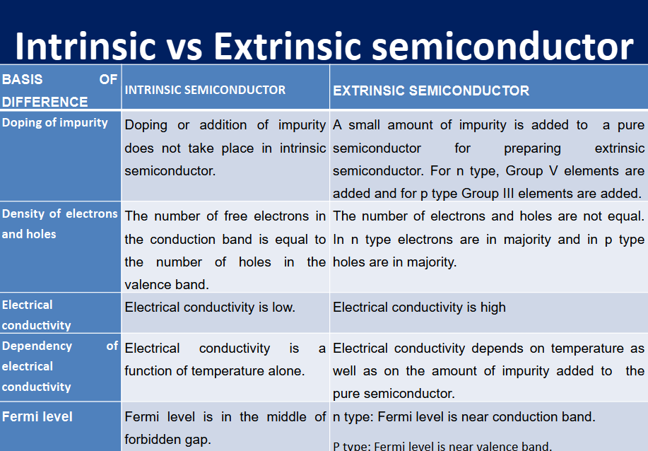
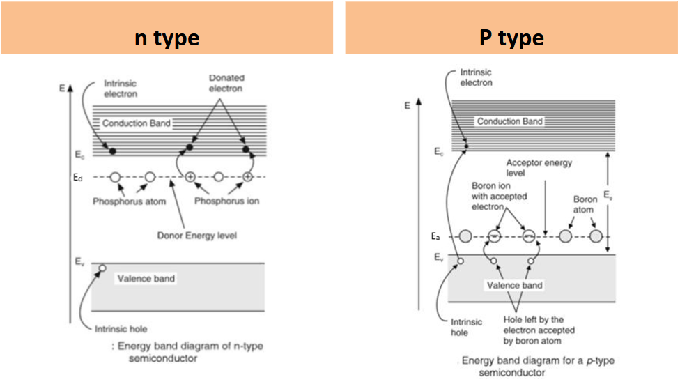
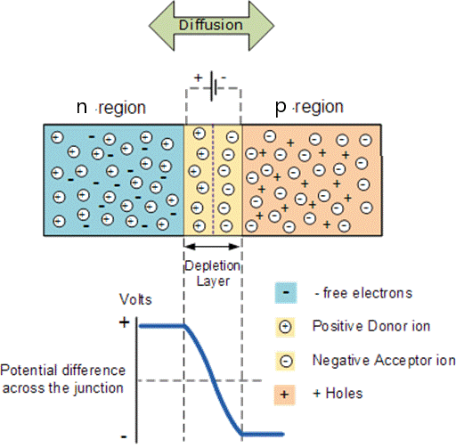
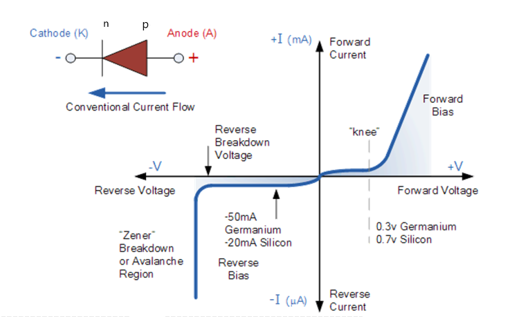
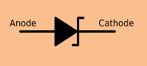
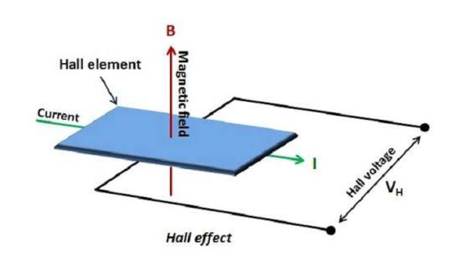

Chemically pure semiconductors are called intrinsic semiconductors
Others are called extrinsic conductors
The differences between the both are given below

When a intrinsic semiconductor is doped with a pentavalent impurity: n type
When a intrinsic semiconductor is doped with a trivalent impurity: p type
Below given is p vs n energy diagram

As seen in the above figure, the donor energy level is nearer to the conduction band in the n type
semiconductor, hence the conductivity is a lot more.
WIP - Energy Level Distributions
Drift Current
Under the condition of thermal equilibrium, the electrons and holes are uniformly distributed in a crystal and
when no external field is applied current does not flow in the crystal.
When an electric field E is applied to a semiconductor, the charge carriers(electrons and holes) start to move
and produce drift current.
The electrons drifting in the conduction band produce a drift current Je = neµeE
Similarly, holes drifting in the valence band produce a drift current of Je = peµhE
Hence, total drift current is Jdrift = neµeE + peµhE
Although they move in different directions, the resultant carrier current is in the same direction
Diffusion Current
The charge carriers(electrons and holes) diffuse from regions of high concentration to regions of low concentration until the
charge carriers are evenly distributed in the material. This motion of charge carriers produce a current component known
as diffusion current.
This happens without the application of an external electric field.
The diffusion current is given by Je(diff) = Deff∇n
Where Deff is the effective diffusion coefficient. Given by
De dn/dx
Hence, total is Jdiff = Deff∇n - Deff∇p
The diffusion current is in the opposite direction to the drift current.
Hence, the total current is J = Jdrift + Jdiff
The total current is given by J = neµeE + peµhE + Deff∇n + Deff∇p
PN Junction
A P-N Junction is formed when a p-type and n-type conductor are joined together by the process of crystal growth.
The transition between p to n type is called the junction

Holes and electrons diffuse from p-region to n-region and vice versa at the junction.
Electrons and holes recombine and disappear at the junction region.
Space charge region exists around the junction where only immobile ions are present.
The depletion region is the same as the space charge region.
Fixed ions in the depletion region produce an electric field, E.
This electric field opposes further diffusion of electrons and holes from n-type to p-type region.
The electric field creates a potential barrier.
Overcoming the potential barrier is required for further diffusion of electrons and holes across it.
This is called the depletion layer.
Biases
Under unbiased condition no net current flows and fermi level is common on n side and p side
Vo = Vn - Vp
The electric field is given by E = Evp - Evn
Anode is +ively charged and Cathode is -ively charged
In forward bias, depletion layer is less and resistance is less
In reverse bias, depletion layer is more and resistance is more
Forward biased circuit:
When the positive terminal of the source (battery) is connected to p region and negative terminal to n region,
the junction is said to be forward biased.
Reverse biased circuit:
When the positive terminal of the source (battery) is connected to n region and negative terminal to p region,
the junction is said to be reverse biased.
In forward bias, majority of charge carriers move across the junction and voltage across the junction decreases
by Vo - Vf
In reverse bias the voltage across the junction increases and width of depletion layer increases
IV Characteristics
The P-N Junction is non linear
The pn junction acts as a closed switch in forward bias condition allowing large current to flow through it, and
acts as an open switch in reverse bias condition causing a very small amount of current to flow through it.

Forward Bias
As long as the forward voltage is less than voltage of potential barrier, the current is negligible
The voltage at which the current sharply increases is the knee voltage.
Knee voltage for Germanium: 0.3v and Silicon: 0.7v
Reverse Bias
A small reverse current flows in the circuit
When the reverse voltage is high enough, it breaks the covalent bonds in the crystal and a large number of
charge carriers are produced. This is called as a breakdown
The diode break down may be due to Avalanche break down or due to Zener break down.
Avalanche break down occurs in diodes which are lightly doped.
Zener break down occurs in diodes which are thin and heavily doped.
Zener Diode
Zener diode is a semiconductor diode specially designed to operate in the breakdown region of the reverse bias.
Zener diodes are always operated in the reverse bias condition. The breakdown phenomenon is reversible and
harmless.

It acts as a normal diode in forward bias
In reverse bias condition, as the reverse voltage is increased a small amount of current called leakage current
flows. Leakage current is due to minority charge carriers.
At a particular value of reverse voltage, the current increases suddenly. This voltage is called breakdown
voltage or Zener voltage, VZ.
In ordinary diodes the breakdown voltage is high and if reverse current is allowed to flow, then the diode will
be damaged.
Zener diodes are designed so that their Zener voltage is much lower, about 2.4 volts.
Location of the zener breakdown can be controlled using doping levels
Hall Effect
When a piece of conductor (metal or semiconductor) carrying current is placed in a transverse (perpendicular)
magnetic field, an electric field is produced inside the conductor in a direction normal to both the current and
the magnetic field. This phenomenon is known as Hall Effect and the generated voltage is known as Hall voltage.

If the material is a p type semiconductor, when electric and magnetic field is applied at right angle to each
other, holes experience a force and are accumulated on one face of the material. This causes a potential
difference and a voltage is developed called Hall voltage.
Similar thing happens to n type semiconductor
eEH = Bev
Consider a n type semiconductor in which electrons have a velocity “v” due to current flow. Let “B” be the
applied magnetic field. The electrons experience a force of “Bev” due to the magnetic field.
A potential difference is established across the two faces of the material causing a field “EH “. This field
gives rise to a force “e EH “ on the electrons.